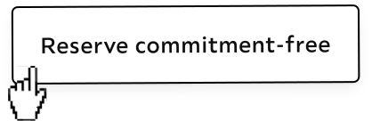
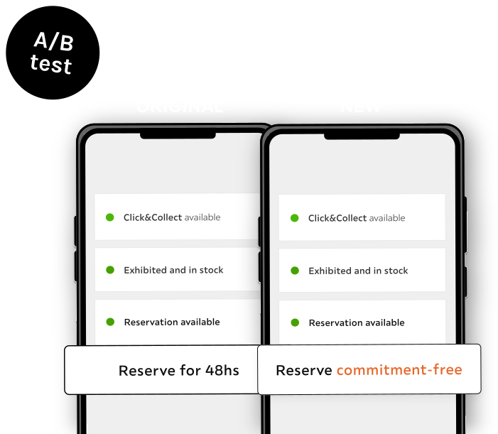

Product design
for Lutz
5 years helping users better
assess furniture online
5 years helping users better
assess furniture online
Lutz is the largest furniture retailer in Austria, operating in over 23 countries across the EU. XXXLutz is a dominant player in the European furniture market and second biggest after IKEA.

Defined the roadmap, prioritized initiatives, and set timelines.
Researched, tested, and delivered user-centered solutions end to end.
Ran workshops, managed stakeholders, balanced user and business goals.
Improved navigation, engagement, and Add to Cart flow — negotiated across teams and oversaw implementation.
One week Design Sprint, research sessions, and a more intuitive omnichannel experience.
After analyzing the reservations flow, I ran an A/B test changing the button copy to "Reserve commitment-free" — and it moved the needle significantly.


Moderated tests every 1.5 months, surveys, unmoderated sessions, and HEART framework dashboards to track every feature.

Swipe to read →
Learned how back-end systems connect and improved handoffs with front-end devs.
Pitching, finding the right allies. How to actually get things shipped at scale.
Led workshops, aligned stakeholders, kept user needs central while meeting business goals.